앱 소개팅은 지치고, 오프라인은 불안하다
스와이프형 소개팅 앱에 피로를 느낀 사람들이 다시 오프라인 만남을 찾지만, 로테이션 소개팅은 정보가 흩어져 있고 진행 경험도 매끄럽지 않습니다. 참가자 입장에서 세 가지 불안을 문제로 정의했습니다.
"어떤 사람들이 오는지 모르겠어요"
참가자의 신원과 직업을 확인할 방법이 없어, 신청 자체를 망설이게 됩니다.
"10명과 얘기하고 나니 누가 누군지 헷갈려요"
짧은 대화가 연달아 이어져서, 끝난 뒤 마음에 든 사람을 정확히 떠올리기 어렵습니다.
"먼저 연락했다가 거절당하면 민망해요"
행사 뒤 연락처를 묻거나 먼저 연락하는 과정이 부담스러워 기회를 놓칩니다.
위 문제는 서비스 구조와 사용 맥락을 바탕으로 세운 가설입니다. 사용자 인터뷰 결과가 있다면 이 자리에 인용과 함께 넣습니다.
진지하지만 부담은 싫은 2030 직장인
25~37세, 일상에서 새로운 사람을 만날 기회가 적은 직장인을 주 타깃으로 잡았습니다. 남녀 모두 부담 없이 쓸 수 있는 톤을 목표로 했습니다.
한○○, 30세
IT 회사 기획자 · 서울 마포구 거주 · 취미 사진, 음악 감상
"앱에서 대화만 길게 하다 끝나는 게 지쳤어요. 직접 만나 보고, 괜찮은 사람이면 자연스럽게 이어졌으면 좋겠어요."
원하는 것
- 인증된 사람만 오는 자리
- 대화거리가 있는 편안한 분위기
- 거절당할 걱정 없는 연결 방식
불편한 것
- 모르는 사람에게 정보가 너무 많이 공개되는 것
- 퇴근 후 일정 맞추기와 노쇼
- 행사 뒤 연락을 먼저 해야 하는 상황
세 가지 불안에 하나씩 답하기
인증된 사람만, 필요한 만큼만 공개
가입 때 본인 인증과 직업 인증을 받고, 프로필은 관계가 가까워질수록 한 단계씩 열리도록 설계했습니다. 회사명은 끝까지 공개하지 않고, 같은 회사 사람과 같은 회차에 배정되지 않는 데에만 씁니다. 마이 페이지에서는 내 카드가 다른 참가자에게 어떻게 보이는지, 아직 가려진 정보까지 그대로 미리 볼 수 있습니다.
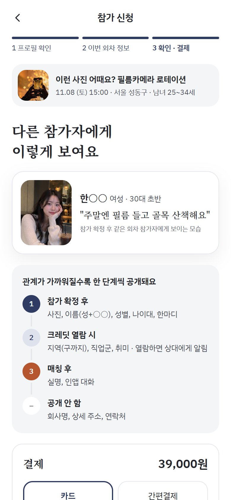
대화하는 동안 남기는 로테이션 메모
행사 당일 화면에서 지금 몇 번째 대화인지 보여주고, 대화한 사람마다 짧은 메모와 '다시 보고 싶어요' 하트를 남길 수 있게 했습니다. 이 메모와 하트는 애프터 선택 화면에 그대로 따라와서, 사진과 번호만으로 사람을 떠올리지 않아도 됩니다.
- 메모는 나만 볼 수 있음
- 다음 상대는 진행자가 라운드를 넘기면 자동으로 공개 · 참가자는 대화와 메모에만 집중
- 순서가 꼬였을 때를 위한 '번호로 바꾸기' 예비 장치
- 메모 남긴 사람 · 하트 누른 사람으로 애프터 후보 필터링
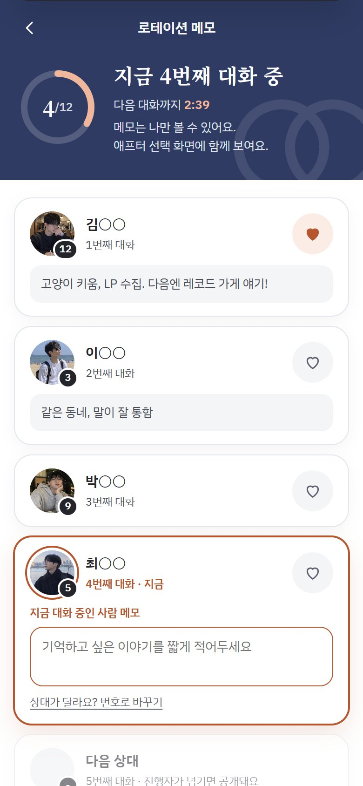
서로 골랐을 때만 연결되는 애프터
행사가 끝나면 24시간 동안 더 알아가고 싶은 사람을 고릅니다. 서로 선택한 경우에만 매칭되고, 이어지지 않은 선택은 상대에게 알려지지 않습니다. 매칭되면 실명이 공개되고 인앱 대화로 바로 이어집니다.
- 선택 인원은 참석 인원의 15% (20명 참석 → 3명)
- 마감 전까지 선택 변경 가능
- 매칭 대화방에서 상대 프로필 · 신고 · 차단 · 나가기
- 이어지지 않으면 비슷한 다음 소개팅을 추천
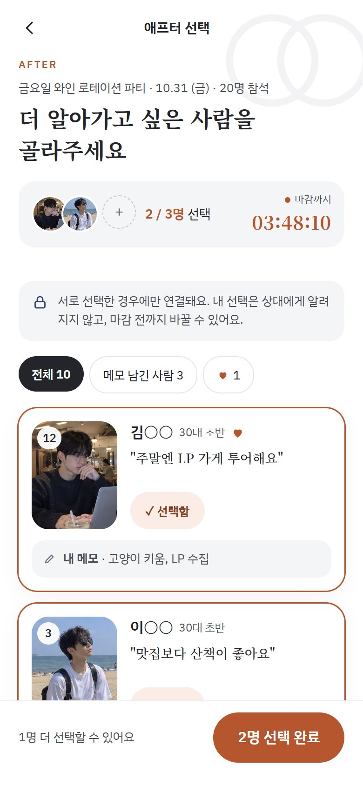
탐색부터 대화까지 한 번에 이어지는 흐름
참가자가 서비스를 처음 만나는 순간부터 매칭 상대와 대화를 시작하기까지의 핵심 경로입니다.

탐색테마 · 마감 임박 · 필터 · 달력
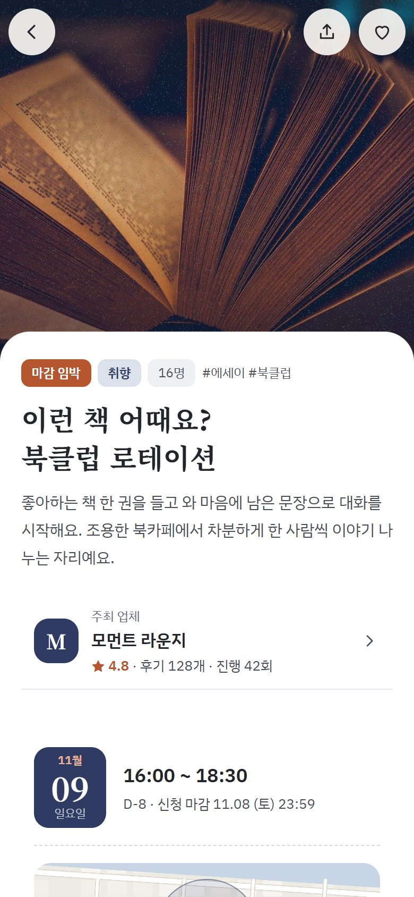
상세 · 신청3단계 신청 · 결제
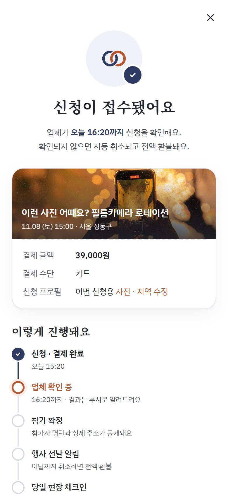
업체 확인1시간 안 승인 · 미승인 시 전액 환불
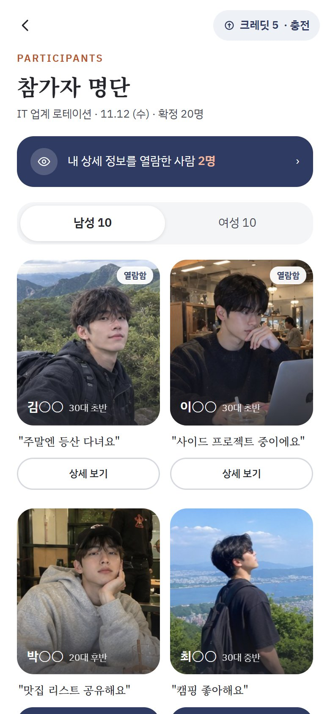
참가 확정참가자 명단 · 크레딧 열람
행사 당일QR 체크인 · 라운드 자동 전환 · 메모
애프터 · 매칭서로 선택 시 대화 시작
화면보다 먼저 정한 규칙들
오프라인 행사는 취소, 노쇼, 성비가 경험을 좌우합니다. 화면을 그리기 전에 규칙부터 정하고, 그 규칙이 화면 곳곳에서 같은 말로 안내되도록 했습니다.
| 항목 | 규칙 | 의도 |
|---|---|---|
| 신청 확인 | 결제 후 업체가 1시간 안에 확인 (밤 11시~아침 8시는 8시부터) | 확인되지 않으면 자동 취소 · 전액 환불기다리는 시간을 예측할 수 있게 |
| 취소 · 환불 | 전날까지 전액 · 당일 50% · 노쇼 환불 없음 | 업체 미승인 · 행사 취소는 전액 환불취소 시점을 화면마다 같은 표로 안내 |
| 노쇼 | 1회 경고, 2회째 7일 신청 제한 | 제한 중에도 둘러보기와 관심 저장은 가능벌보다 다시 돌아올 길을 함께 보여줌 |
| 대기 신청 | 내 성별이 마감되면 무료 대기 · 자리가 나면 순서대로 알림 | 알림 후 1시간 안에 결제하면 확정자리가 비어도 다음 사람이 바로 채움 |
| 상세 열람 | 1크레딧으로 한 명의 지역 · 직업군 · 취미 열람 | 열람하면 상대에게 알림 · 마이에서 서로의 열람 기록 확인일방적인 정보 탐색을 막는 장치 |
| 로테이션 | 다음 상대는 진행자가 라운드를 넘길 때 공개 | 참가자가 직접 지정하지 않음 · 번호로 바꾸기는 예비대화 사이에 휴대폰을 만지지 않게 |
| 애프터 | 참석 인원의 15%까지 선택 · 종료 후 24시간 | 서로 선택한 경우에만 매칭 · 실명 공개거절의 부담 없이 마음을 표현 |
네 개의 탭, 하나의 여정
하단 탭(모바일)과 상단 메뉴(PC)를 같은 구조로 맞췄습니다. 애프터는 시간이 걸린 관계의 순간이라 별도 탭으로 꺼냈고, PC에서 마이는 메뉴 대신 헤더의 프로필 사진으로 들어갑니다.
탐색
- 마감 임박 소개팅
- 테마 결혼관 · 파티 · 업계 · 취향
- 새로 열린 테마
- 리스트 / 달력 보기 같은 화면에서 전환
- 필터 날짜 · 지역 · 인원 · 테마 · 적용 태그 · 초기화
- 소개팅 상세 → 참가 신청 · 대기 신청
내 소개팅
- 예정 접수중 · 확정 · 대기 · 미승인
- 지난 소개팅
- 리스트 / 달력 보기
- 참가자 명단 · 상세 열람
- 행사 당일 · 로테이션 메모
- 참가 취소
애프터
- 진행 중인 선택
- 애프터 선택 · 선택 완료
- 매칭 결과 성공 · 이어지지 않음
- 매칭 대화방 접속 표시 · 고정 메모
- 매칭 상대 프로필 · 신고 · 차단
마이
- 다른 참가자에게 보이는 모습
- 프로필 정보 · 본인 인증
- 크레딧 충전 · 참가 기록 · 노쇼
- 관심 소개팅
- 열람 기록 나를 열람 · 내가 열람
- 설정 알림 · 결제 · 차단 · 신고
신청 상태를 색과 면으로 구분
한 사람이 여러 소개팅을 동시에 신청할 수 있어, 상태가 한눈에 구분되어야 했습니다. 상태는 텍스트와 함께 배지의 면 색으로도 구분됩니다.
업체가 신청을 확인하는 중. 1시간 안에 결과 알림.
참가자 명단과 상세 주소 공개. D-day 표시.
내 성별 자리 마감. 자리가 나면 순서대로 알림.
남은 자리가 적은 회차. 탐색에서 먼저 노출.
이번 회차는 함께하지 못함. 전액 환불과 비슷한 소개팅 추천.
두 개의 원이 겹치는 자리
서비스명 '이음'에서 출발해, 두 원이 맞물린 심볼을 만들었습니다. 이 심볼의 두 색이 그대로 서비스의 색 규칙이 됩니다.
컬러
색 규칙. 탐색 · 신청 · 일반 액션은 인디고, 애프터 · 매칭 · 마감 임박처럼 시간이 걸린 관계의 순간에만 테라코타를 씁니다. 테라코타는 면이 아니라 점, 링, 버튼 하나처럼 작게 씁니다. 본인 · 직업 인증과 접속 중 표시는 초록으로 따로 구분합니다.
타이포그래피
제목, 날짜, 번호, 한마디는 Noto Serif KR로 감성을 주고, 버튼과 정보는 IBM Plex Sans KR로 읽기 쉽게 나눴습니다.
컴포넌트
알약형 버튼, 티켓처럼 점선으로 나뉜 행사 카드, 완전한 원형의 프로필이 반복되는 기본 단위입니다. 목록은 테두리 없이 구분선으로만 나누고, 카드는 화면마다 핵심 요약 하나에만 써서 상자가 겹쳐 보이지 않게 했습니다.
이미지 톤
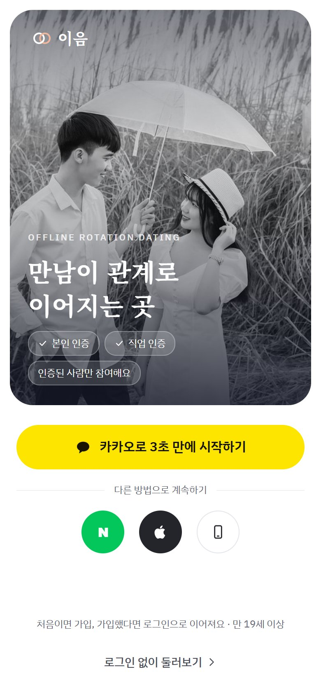
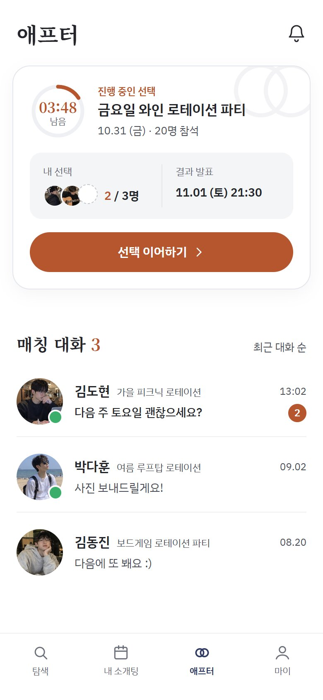
일러스트 대신 실제 장소와 사물 사진을 쓰고, 사진 위 글씨는 어두운 딤으로 대비를 확보했습니다. 배경은 흰색과 차가운 회색으로 깔끔하게 유지합니다.
모바일 · PC 반응형 60화면
같은 구조를 유지하되, PC에서는 넓은 화면을 살려 정보를 나란히 보여줍니다. 열람 기록처럼 모바일에서는 화면을 넘어가는 상세도 PC에서는 목록 옆에 바로 띄웁니다.
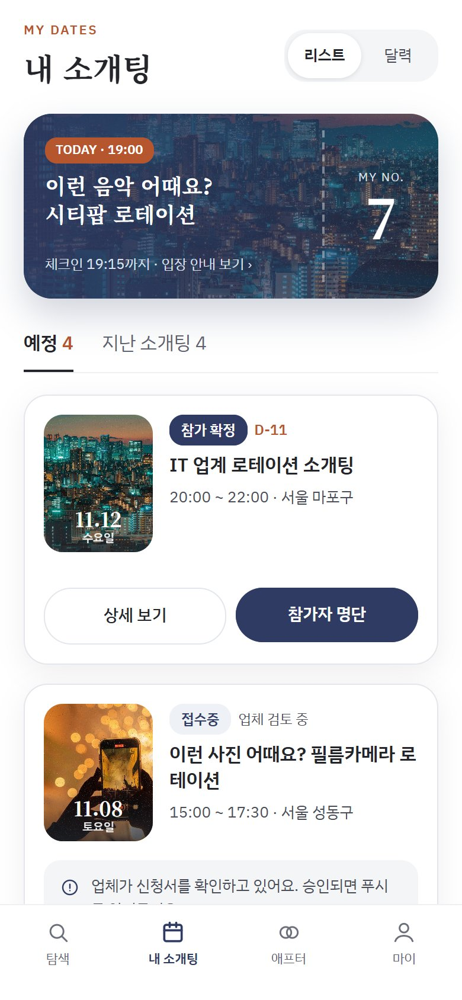
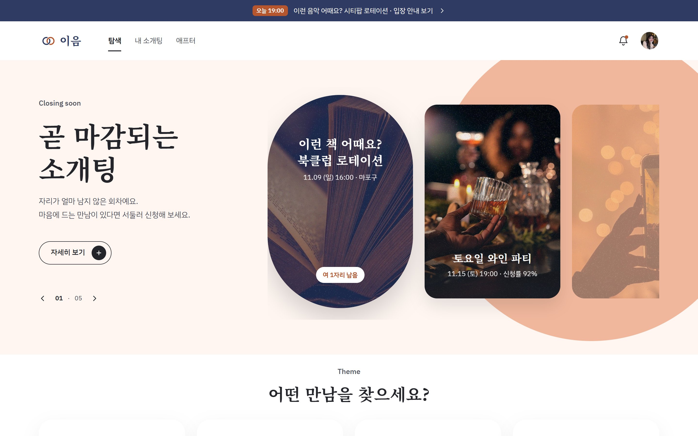
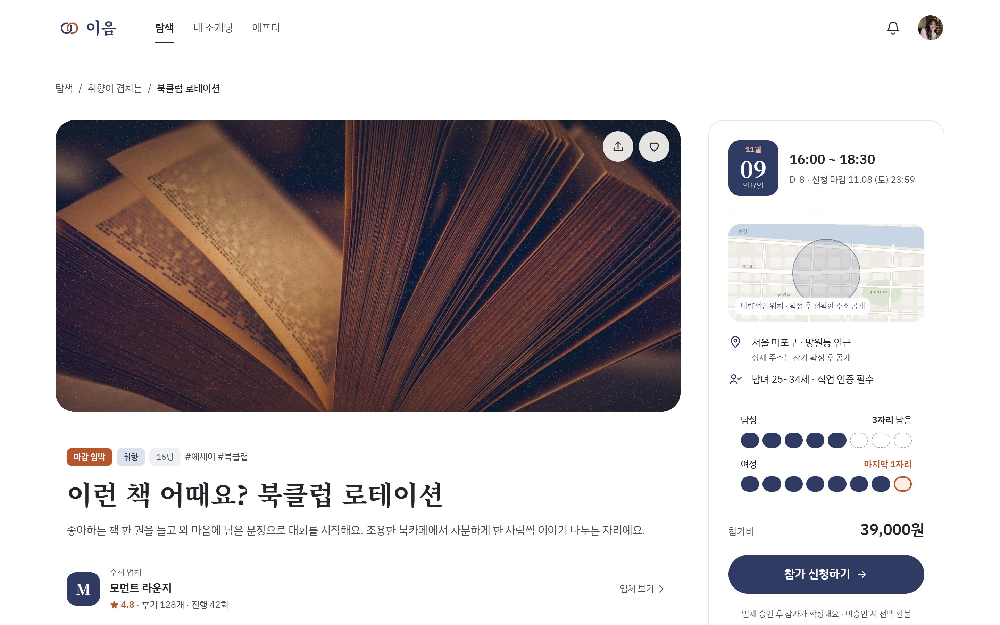
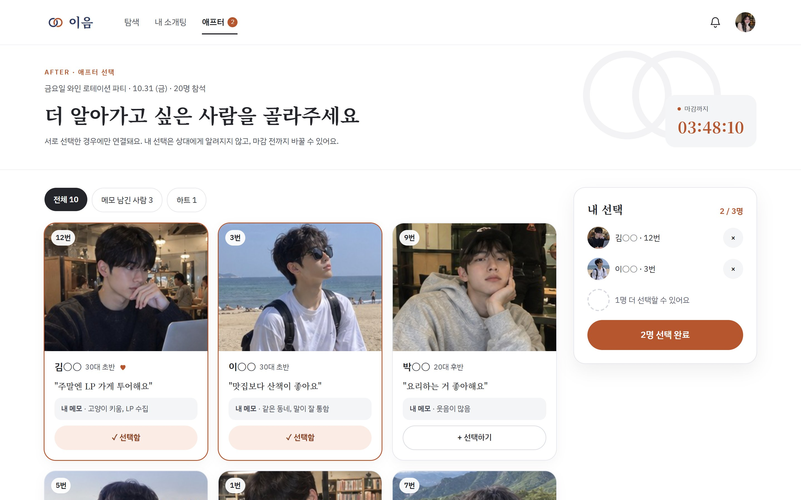
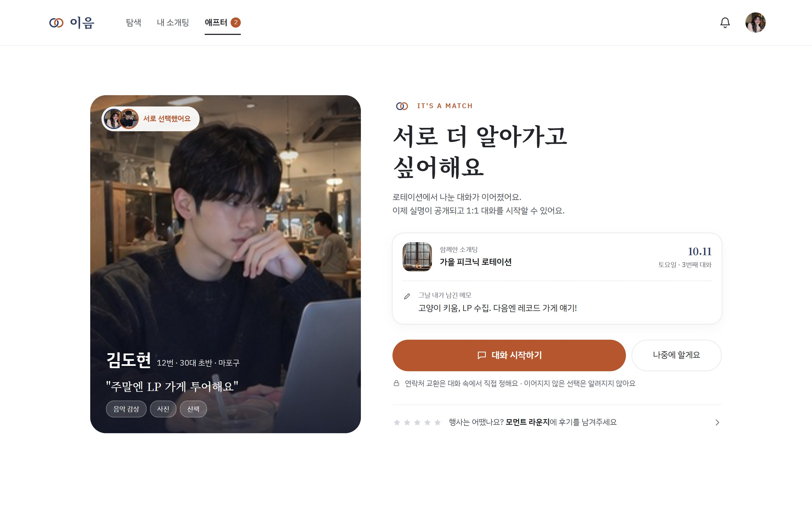
웹으로 옮기며 새로 만든 화면
시안에 없던 흐름을 실제로 동작하는 화면으로 채웠습니다.
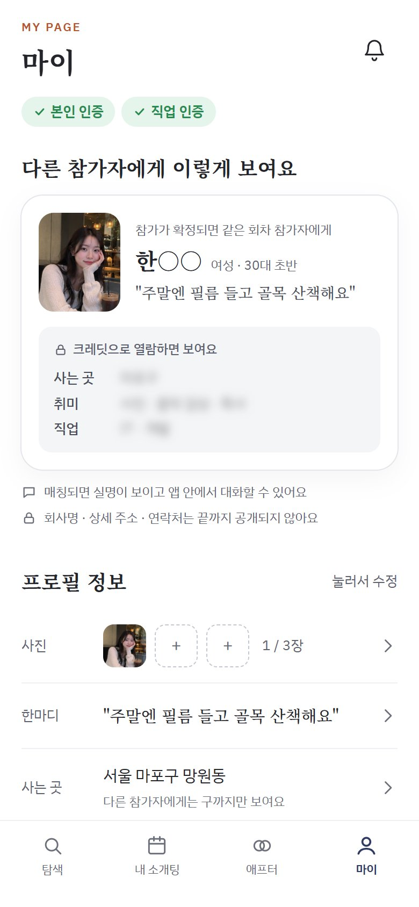
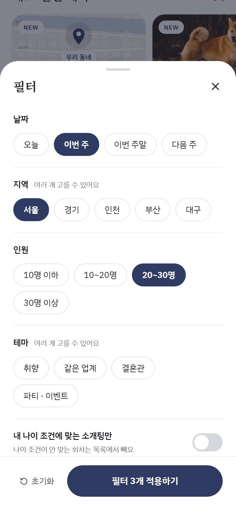
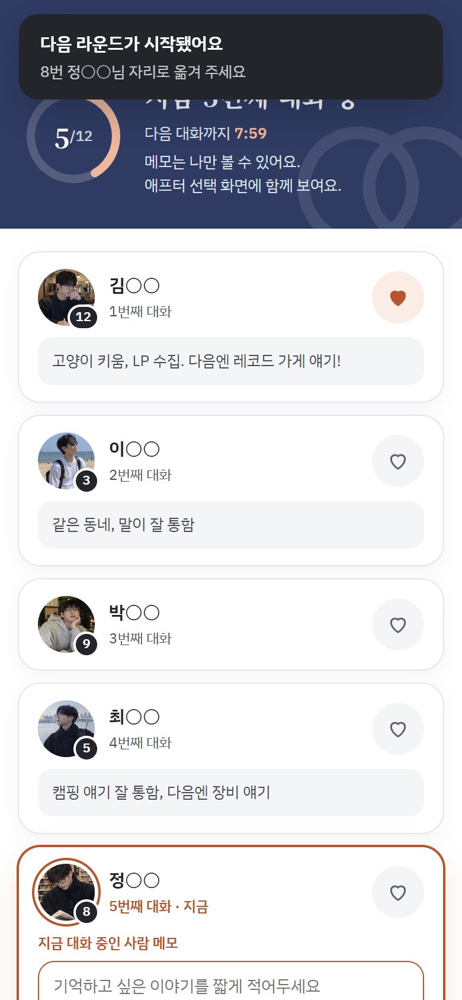
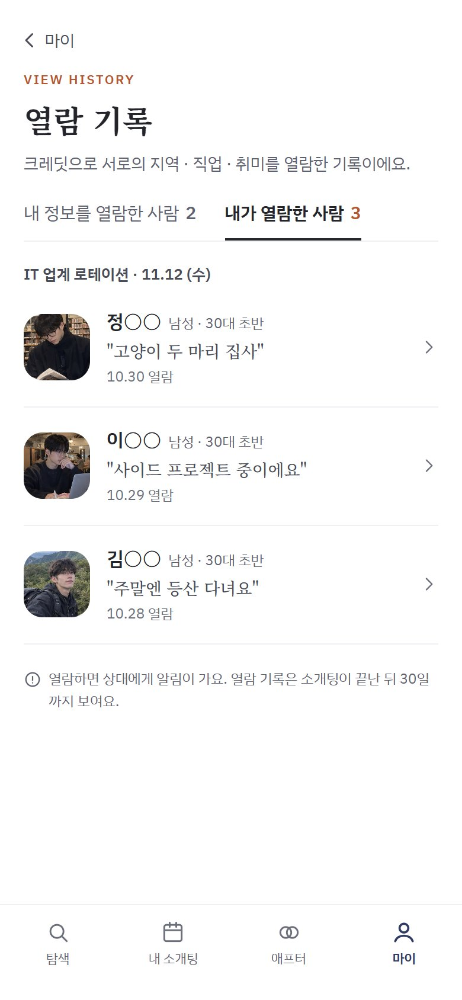
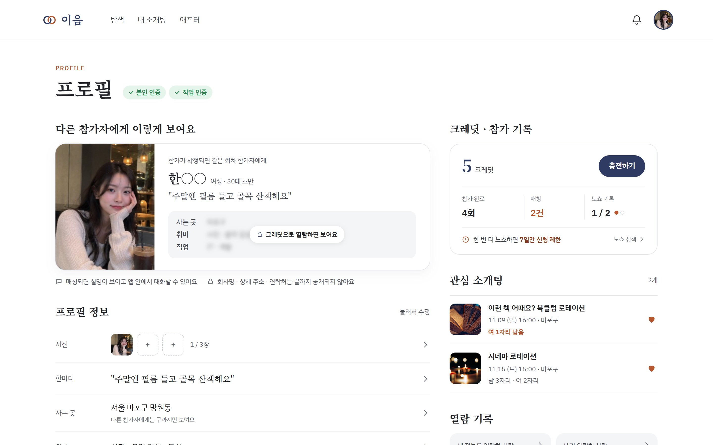
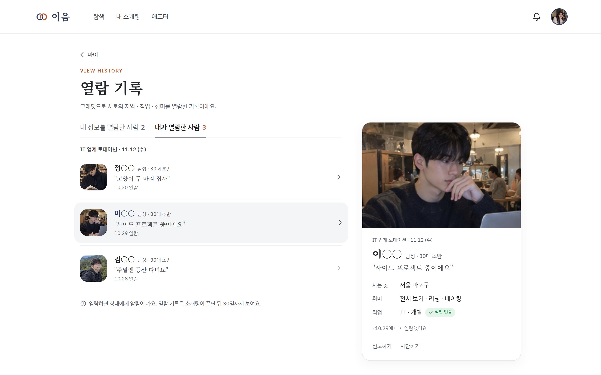
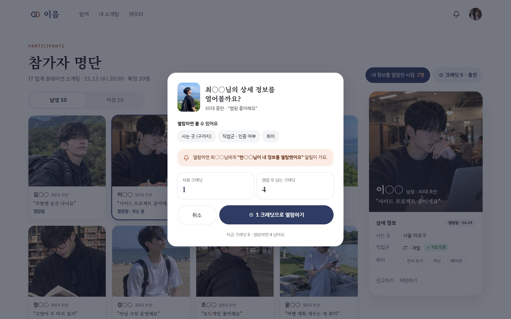
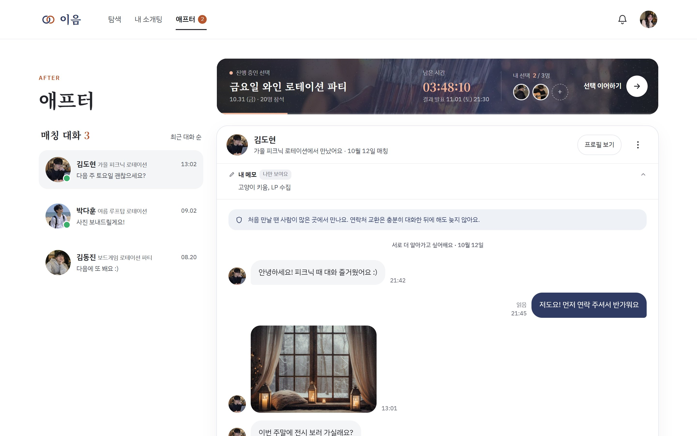
다음에 더 풀고 싶은 것
잘된 점
- 정책을 먼저 정해, 60개 화면에서 취소 · 노쇼 · 대기 안내가 같은 말로 반복되도록 맞춤
- 메모 → 애프터 선택 → 매칭 대화로 이어지는 핵심 경험을 하나의 데이터 흐름으로 설계
- 색 규칙(인디고 / 테라코타 / 인증 초록)으로 화면이 늘어나도 의미가 흐트러지지 않게 함
- 시안을 실제로 동작하는 웹으로 옮기며 비어 있던 흐름(다음 상대 공개, 필터, 크레딧 충전, 열람 기록)을 채움
다음 단계
- 실제 참가 경험이 있는 사용자 인터뷰와 사용성 테스트로 가설 검증
- 행사 중 메모 시점 검증 · 자리 이동 시간에 쓰도록 안내하는 방식 실험
- 성비 불균형 대응과 업체(주최자) 관리 화면 · 라운드 진행 화면 설계
- 결혼중개업법 등 관련 법규 검토